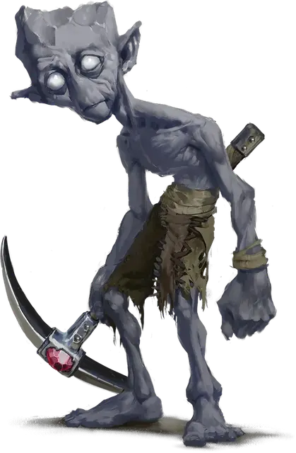

Пич
Pech
Маленький Элементаль, нейтрально-добрый

Класс Доспеха 17 (природный доспех)
Хиты 82 (11к6 + 44)
Скорость 30 футов, копая 20 футов
| мод | спас | ||
|---|---|---|---|
| СИЛ | 19 | +4 | +4 |
| ЛОВ | 11 | +0 | +0 |
| ТЕЛ | 18 | +4 | +6 |
| мод | спас | ||
|---|---|---|---|
| ИНТ | 11 | +0 | +0 |
| МДР | 14 | +2 | +4 |
| ХАР | 10 | +0 | +0 |
Навыки Атлетика +6, Восприятие +4, Выживание +4
Иммунитет к состояниям окаменение
Чувства тёмное зрение 120 футов, пассивное Восприятие 14, чувство вибрации 120 футов
Языки Общий, Терран
Опасность 4 (1100 опыта)
Бонус мастерства +2
Особенности
Сопротивление магии. Пич совершает с преимуществом спасброски от заклинаний и прочих магических эффектов.
Чувствительность к солнечному свету. Находясь на солнечном свету, пич совершает броски атаки с помехой.
Действия
Мультиатака. Пич совершает две атаки Киркой. Если цель — существо Большого и менее размера, она должна преуспеть в спасброске Силы Сл 14, иначе она сбивается с ног.
Укрепленная кирка. Рукопашная атака оружием: +6 к попаданию, досягаемость 5 футов, одна цель. Попадание: 11 (2к6 + 4) урона силовым полем. Если цель — Конструкт, то попадание считается критическим.
Совместные заклинания (2/День). Пич работает сообща с тремя или более пичами для наложения заклинаний без использования материальных компонентов и используя Мудрость в качестве базовой характеристики (Сл спасброска от заклинаний 12). Если в пределах 30 футов от него есть хотя бы три других пича, то он может наложить заклинание каменная стена [wall of stone]. Если в пределах 30 футов от него есть хотя бы семь других пичей, то он может наложить заклинание высшее восстановление [greater restoration]. Каждый из участвующих в совместном наложении заклинания пичей не может быть недееспособным и должен обладать хотя бы одним использованием действия Совместные заклинания, которое они должны мгновенно потратить для участия (не требуя траты действий).
Изменение формы камня (3/День). Пич накладывает заклинание изменение формы камня [stone shape], используя Мудрость в качестве базовой характеристики.
Описание
Пичи — это маленькие двуногие землекопы родом со Стихийного Плана Земли. Они способны находить уязвимые участки в сооружениях, объектах и любой сырой материи, поэтому очень быстро роют туннели и, если потребуется, могут брать на себя роль саперов и диверсантов. Пичи с большим удовольствием прокладывают огромные сети туннелей с норами, где живут в кланах и добывают драгоценные металлы и самоцветы. Пичи стройные и маленькие существа с длинными тонкими конечностями и широкими ступнями. Солнечный свет вызывает тошноту у этих созданий, потому что их крупные глаза без зрачков чувствительны к яркому свету. Пичи всеми силами стараются его избегать. Их кожа по цвету и текстуре похожа на всевозможные разновидности глины, земли и камня.
Пичи могут использовать магию Стихийного Плана Земли, чтобы менять форму камня. Вместе они гораздо сильнее, так как в группах могут объединять свои магические силы и создавать каменные стены, а также наделять существ стойкостью земли.